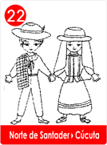
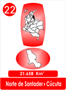

Chimia cuyo nombre traduce "nuestro camino ", era una hermosa joven que había heredado el telar de la tía Quiti,
La que tejiera los mejores chumbes y maures de bellos colores que parecían cintas bordadas y pintadas
Chimia superaba ya el oficio de Quiti.
Era una experta en manejar los husos, los torteros y la rueca. Con las clavijas enredaba la urdimbre porque Chimia era una experta en elegir los tejidos y figuras en colores.
Creció en la maloca de la tía Quiti, ella fue su maestra y desde pequeña la encargo cuidar las tinajas de barro y las distinguía por su forma, como la que guardaba el añil que podía convertir desde el azul del cielo, hasta el negro de la noche sin luna.
A las vasijas les ponía nombres, la cochinilla, la batatilla, el azafrán, la puncinga, el trompeto, la uvilla o el raque. De ahí brotaban colores púrpura, oro morado y de las barbas de las rocas, el anaranjado.
Como era costumbre en cada vivienda Muisca había un telar, pero el mejor era el de Chimia, así no le faltaban encargos y trabajo.
De su telar salían los ornamentos para Jeques o Sacerdotes y los vestidos para la realeza, como el Zipa y el Usaque, y los caciques de varias regiones.
Por eso Chimia contrataba ayudantes jóvenes, así aprenderían el oficio como ella lo había hecho.
Hacían diademas, tocados para la cabeza, cuellos y turbantes, eran muchos los maures y chumbes que salían de los telares de Chimia.
En las ánforas y ollas de arcilla con tapadera se guardaban los secretos de los colorantes que elegían según el cliente.
La Santa Ley del Trabajo, era para la gente de la tribu Muisca que hablaba chibcha. ! la Bendición del Creador!!!